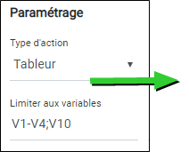
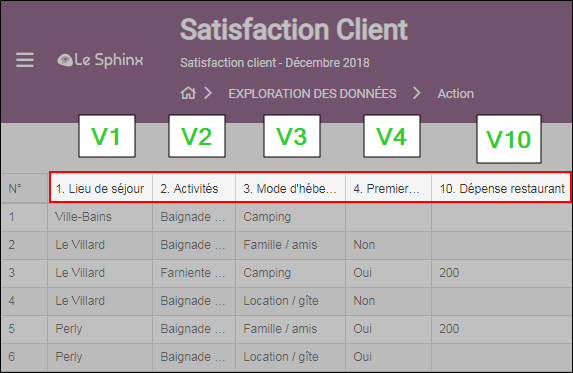
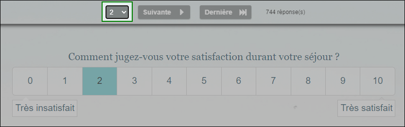
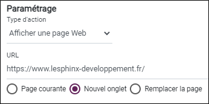

Concevoir un rapport
Préparez un rapport détaillé à partager avec vos collaborateurs en leur donnant la possibilité de consulter les résultats d'études et les tableaux de bord construits en temps réel.

Pour concevoir un rapport, accédez à la partie Reporting, onglet Conception.
Depuis l'environnement de conception, vous pouvez :
 PARAMÉTRER LE DESIGN DU RAPPORT
PARAMÉTRER LE DESIGN DU RAPPORT
Le design du rapport est composé de trois parties :
-
Les titres : Le nom du rapport, description du rapport et le message d'accueil.
-
Cliquez dans la zone texte correspondante à chaque titre pour le renommer.
-
Cliquez sur le bouton
 pour modifier la police, taille (en px) et couleur de chaque titre.
pour modifier la police, taille (en px) et couleur de chaque titre.Le nom & la description du rapport sont affichées dans le bandeau latéral.
-
- Le bandeau :
- Le contenu :
Définition d'une couleur de fond ou d'un fond personnalisé en important une image depuis votre ordinateur ou depuis la galerie d'images mise à votre disposition.


 AJOUTER UNE NOUVELLE RUBRIQUE
AJOUTER UNE NOUVELLE RUBRIQUE
Pour ajouter une rubrique, procédez comme suit :
-
Cliquez sur + Ajouter une rubrique situé en bas du rapport.
-
Donnez un nom à la nouvelle rubrique et ajoutez une description si nécessaire depuis la fenêtre de paramétrage de la rubrique.
-
(optionnel) Cliquez sur le bouton
pour modifier la police, la taille (en px) et la couleur du nom / description d'une rubrique.


Il est possible de modifier l'ordre d'affichage des rubriques en drag&drop (glisser-déposer). Pour ce faire,
-
Placez le curseur au-dessus l'icône puis déplacez la rubrique.

Cliquez sur l'image ci-dessus pour un aperçu animé
-
Pour supprimer une rubrique, cliquez sur le bouton
 .
.
 AJOUTER UNE NOUVELLE ACTION
AJOUTER UNE NOUVELLE ACTION
Pour ajouter une nouvelle action dans la rubrique sélectionnée, procédez comme suit :
-
Cliquez sur + Ajouter une action.
REMARQUE : Il est possible de générer automatiquement autant d'actions que de pages dans une vue Dataviv', pour ce faire :
Cliquez sur le bouton puis sélectionnez l'étude et la vue à utiliser. -
Donnez un nom à la nouvelle action et ajoutez une description si nécessaire depuis la fenêtre de paramétrage de l'action.
-
(optionnel) Cliquez sur le bouton
pour modifier la police, la taille (en px) et la couleur du nom / description d'une action. -
Choisissez par la suite le type d'action à utiliser :
Afficher une Vue d'analyse, afficher le Tableur (données), Consulter les observations ou afficher une page Web,
AFFICHER UNE VUE D'ANALYSE
Cette action permet d'afficher une vue contenant vos différentes analyses.
-
Sélectionnez l'action Vue d'analyse depuis le menu déroulant Type action.
-
Sélectionnez l'étude contenant la vue à afficher.
-
Sélectionnez la vue depuis le menu déroulant Vue d'analyse à afficher.
-
Sélectionnez la page à afficher.
REMARQUE : Toutes les pages de la vue seront par défaut affichées.
AFFICHER LE TABLEUR
Cette action permet d'afficher les données de votre enquête.
-
Sélectionnez l'action Tableur depuis le menu déroulant Type action.
-
(optionnel) définissez les variables que vous souhaitez afficher en cliquant sur le bouton ou en écrivant manuellement le numéro de variable séparé par un ";".
EXEMPLE : On voudrait afficher uniquement les variables V1, V2, V3, V4 et V10, dans ce cas on écrit : V1-V4;V10.


REMARQUE : Toutes les variables de l'enquête seront par défaut affichées dans le tableur.
-
Paramétrez les options avancées du tableur.
-
Personnaliser l'affichage :(numéro des lignes et des variables, libellés....).
-
Paramétrer les permissions: donner la possibilité d'ajouter, modifier ou supprimer des observations, télécharger le fichier de données ou consulter les fichiers téléchargés dans la cas d'une question upload de document.
-
Accéder au formulaire de saisie (en modification ou en consultation).
Cocher la case Activer, sélectionner le formulaire à afficher et le mode d'accès En consultation ou En modification.
-
CONSULTER LES OBSERVATIONS
Cette action donne la possibilité à l'utilisateur de consulter ou de modifier les observations une par une.
-
Sélectionnez l'action Consulter les observations depuis le menu déroulant Type action.
-
Sélectionnez le formulaire de saisie à utiliser depuis le menu déroulant Formulaire.
-
Sélectionnez le type d'accès à donner : permettre à l’utilisateur de modifier les observations en cochant l'option Modifier ou de consulter les observations en cochant l'option Consulter.
-
(optionnel) Définissez une variable selon laquelle les observations seront listées.
EXEMPLE : Lister les observations selon la note de satisfaction donnée vous permettra de repérer et d'accéder rapidement aux observations des répondants insatisfaits.

REMARQUE : Les observations sont par défaut listées selon leur numéro.
-
(optionnel) Donnez la possibilité à l'utilisateur d'imprimer les observations en cochant l'option Impression et/ou de les supprimer en cochant l'option Suppression.
REMARQUE : La suppression d'observations n'est possible que lorsque l'action Consulter les observations est paramétrée en modification.
AFFICHER UNE PAGE WEB
Cette action permet d'afficher une page d'un site web.
-
Sélectionnez l'action Afficher une page Web depuis le menu déroulant Type action.
-
Insérez l'URL de la page web concernée.
-
Sélectionnez la cible lors du clic sur l'action : ouvrir dans la page courante, dans un nouvel onglet ou remplacer la page.

REMARQUE : Certaines pages web n'autorisent pas leur intégration (dans le cas d'un affichage dans la page courante).
-
-
(optionnel) personnalisez le style d'une action.
-
Choisissez la taille de la vignette de l'action : Petite ou grande.
-
Ajoutez un logo si nécessaire, pour ce faire, cliquez sur le bouton +.
-
Définissez une couleur de fond ou un fond personnalisé en important une image depuis votre ordinateur.
-
Affichage des libellés : Choisissez la manière dont les libellés seront affichés (Affichage Permanent, Apparaître au survol ou Disparaître au survol).
-


-
Une fois que vous avez terminé la conception de votre rapport, cliquez sur le bouton Tester pour avoir un aperçu.
 CRÉER UN NOUVEAU RAPPORT
CRÉER UN NOUVEAU RAPPORT
Il est possible de créer un nouveau rapport ou de dupliquer un rapport déjà existant.
-
Pour créer un nouveau rapport, cliquez sur le bouton
 .
. -
Pour dupliquer un rapport, cliquez sur .
-
Pour renommer un rapport, placez le curseur sur le nom puis cliquez sur le crayon.

Ces actions peuvent être également réalisées depuis la liste des rapports.